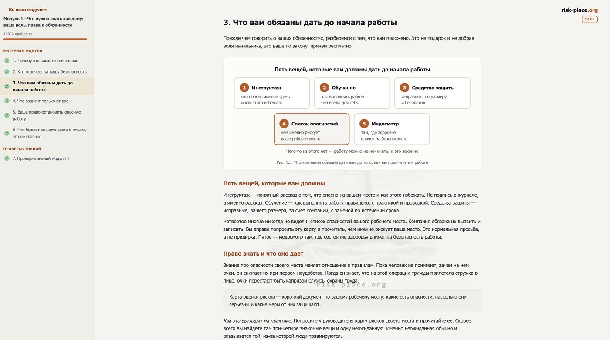
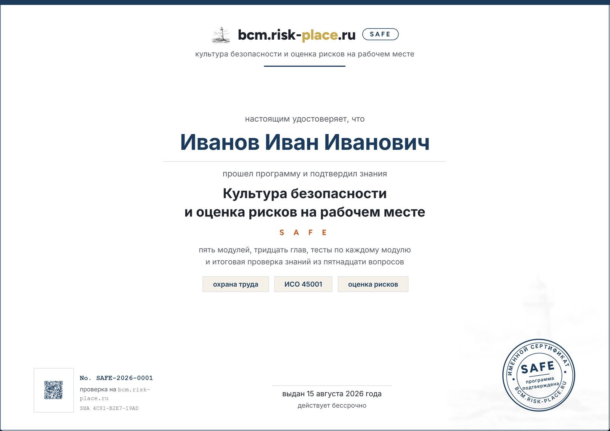

Who it is for
For the entire workforce. The programme’s language is designed for a mass audience: short sentences, real-life examples, and paired “how it happens” and “how it should be done”.
- Workers, foremen, drivers, warehouse staff.Everyone who works near hazards every day.
- Occupational safety specialist.Who needs to reach hundreds of people and see who has really completed the programme.
- Site manager.Who is responsible for people going home unharmed and has to be able to confirm it.
What the company gets
The programme works with no installation, passwords or maintenance on your side. You send the list of participants, and we issue access.
- A personal link for everyone.It opens in the browser of a phone or computer, no password is needed, and progress is saved automatically.
- Visible progress.For each participant you can see how many chapters are completed and whether the tests are passed.
- Completion notice.When someone passes the final knowledge check, the person in charge is notified.
- Personal certificate.With a unique number, prepared on completion of the programme and sent to the participant’s email.
- Industry edition.The fifth module is released for your industry: metals, oil and gas, warehousing and logistics, office.
- Participant feedback.After the final knowledge check we collect a rating of the programme and a short review, so you can see how people received it.
The programme: 5 modules, 30 chapters
Each chapter takes about four minutes to read and has one or two diagrams and a review of a workplace situation.
- 016 chaptersWhat everyone needs to know: your role, rights and dutiesWhere personal safety at work begins. Who is responsible for what, what the employer must provide before work starts, what depends on you alone and how the right to stop unsafe work works.
- 027 chaptersHazards and risks: how to see and assess themThe difference between a hazard and a risk, with clear examples. A one-minute risk assessment, working at height and with electric current, machinery and vehicles, slow-acting harmful factors, a five-minute workplace check and the hierarchy of controls.
- 036 chaptersSafety culture: prevention instead of reactionWhy small things matter more than after-the-fact reviews. The incident pyramid, how to report a hazard so that people listen, the stop card, a case review without looking for someone to blame, and what to do if a hazard is not removed.
- 046 chaptersResponding to an incident: the first hourThe sequence that saves two people. The first minute, what you must not do, the limits of first aid, what happens after a workplace injury, fires and accidents with no one hurt, and your rights during an investigation.
- 055 chaptersIndustry specificsWhere irreversible harm happens most often, three severe scenarios and the barriers against them, high-risk work and the permit-to-work, contractors and work nearby, a personal checklist for the shift. The module is released in industry editions.
How the knowledge check works
Four levels. You cannot get through the programme without answering the questions.
- Self-check inside each module.Questions along the way through the chapters; without them the next step does not open.
- Test after each module.Three questions, two correct answers to pass; the questions are shuffled on every attempt.
- Final knowledge check.Fifteen questions across all modules, twelve to pass; some of the questions are short workplace situations.
- Personal certificate.With a unique number, on completion of the whole programme.
What the programme looks like inside
Real screens taken from the programme. On the left you can see the module contents and completion marks, on the right a chapter with a case review and a diagram.

Click the screenshot to enlarge it.
Personal certificate
The certificate is emailed to the participant on completion of the whole programme: after the tests for each module and the final knowledge check of fifteen questions.
The public register will open with the first group of participants. To verify a certificate today, write to info@risk-place.ru. We reply the same day.

A sample. A real certificate shows the participant’s name, a number and a date.
- What it confirms.What the programme was made for: the employee can notice the hazards around them, assess them and act during an incident. The authenticity of every number can be verified.
- Status of the certificate.The certificate has the same name as the programme and speaks to the person’s preparation. It is not a state accreditation. It does not replace the documents a company issues under occupational safety requirements and is not issued in their place.
- One list for the employer.The group’s certificates arrive together with the completion report.
Pricing for companies
The price per participant depends on the group size: the more people, the lower the price per person.
Companies pay by invoice. Access to the materials stays open for six months from the date it is issued.
- Up to 19 participants — RUB 7,900.A small site or a single crew. Access is issued the same day.
- From 20 to 49 participants — RUB 6,400.A workshop, warehouse or branch. A completion report for the whole group.
- From 50 participants — RUB 5,000.The lowest price in the range. An industry edition of the fifth module for your industry.
- The whole programme.All five modules, the tests, the final knowledge check, a personal certificate and a personal account with group progress.
- Groups of three hundred participants or more and multiple sites.Discussed separately: we set up access delivery and reporting to suit you. RUB 5,000 per person is the lowest price in the range for any group size.
Take the programme on your own
An option for those who need the programme personally: an occupational safety specialist, a section foreman, the manager of a small site, a self-employed contractor.
Online card payment is being connected. For now, access is issued on request within one working day.
- The same content as the corporate version.Five modules, thirty chapters, tests and the final knowledge check.
- A personal link by email.No password needed.
- Your own pace.From a phone or a computer; you can return to any chapter.
- A personal certificate with a number.Issued after the knowledge check.
- Six months of access.From the date of issue.
- 01You send a requestAn invoice or a payment link arrives by email.
- 02You payYour personal link to the programme arrives within 24 hours.
- 03You go at your own paceThe certificate is prepared after the knowledge check.
Need it for a group? Use the company rates: the price per person is lower there.
Programme leadership
The programme is led by practitioners who have built risk management and continuity systems in large companies themselves.

Chief Risk Officer of American Express Bank and its payment system operator in 2010–2024, chair of the risk committee. Built a risk management system across twelve business units on the three lines of defence model with no audit findings; ran ICAAP under Basel III, risk and control self-assessment across fifteen key processes and the continuity plan with annual exercises. Earlier: head of risk at Bank of Cyprus Russia, corporate finance at Deloitte, audit at Ernst & Young. She owns the programme design, the cohort schedule and the participant experience across all our programmes and curates the ERGP Circle.

Fifteen years leading risk functions at large companies. Built business continuity from scratch at Nornickel. Chief Risk Officer of a USD 20 billion petrochemical megaproject with more than 200 construction risk indicators. Deputy Chair of Rosstandart Technical Committee 010 “Risk Management”. Has prepared more than 300 specialists.
Discuss your task
Leave your contacts. We reply within one working day and arrange a call or a Zoom meeting. If needed, we sign an NDA before the conversation.
Frequently asked questions
Control systems at our critical information infrastructure (CII) site are being replaced. Does the programme suit shift personnel?
The programme sets the order of the first hour after any incident: stop, report, take no risks. What to do when a specific system fails is set by the site’s own instruction, which is written together with the migration plan. How system migration and shift readiness are connected: replacing industrial control systems (ICS) without stopping production (in Russian).
How long does the programme take?
About two hours of reading time. Participants go at their own pace, from a phone or a computer, and can return to any chapter.
Do we need to install the programme or set up passwords?
No. Each participant gets a personal link and opens the programme in a browser. No password is needed, and progress is saved automatically.
How will we know who has completed it and who has not?
Your personal account shows every participant: how many chapters they have completed, whether they have passed the module tests and whether they have passed the final check. When a participant finishes, you get a notification.
What certificate does an employee receive?
A personal certificate “Safety culture and workplace risk assessment” with a unique number. It has the same name as the programme itself. It is a record of preparation. It is not a state accreditation and does not replace the documents a company issues under occupational safety requirements. It confirms one thing, and it is an important one: the person has completed the programme and has shown on the knowledge check that they can see the hazards around them, assess them and act during an incident. The value of the certificate lies in the knowledge and skills behind it.
Can the content be adapted to our industry?
Yes. The fifth module is released in industry editions: metals, oil and gas, warehousing and logistics, office. The other modules are the same for everyone.
Can one person take the programme without a company?
Yes. Individual access costs RUB 9,900, and the content is the same. This option is for an occupational safety specialist, a foreman or a site manager who needs the programme personally. Details are in the section take the programme on your own.
How do we pay?
By invoice to your organisation. Write to info@risk-place.ru and we will send an invoice and a contract.